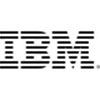

About Me
After completing his primary and secondary education in Ankara, he continued his high school education in the field of information technologies in Ankara. During this period, internship experience was obtained in TBMM and the opportunity to study and do internship in Brighton, England for 4 months. This opportunity, which is the most important beginning of his career on computer, was successfully completed.
In 2015, he won the Department of Computer Engineering in the University of Turkish Aeronautical Association and graduated as an Honor student in 2020.
At the same time, as a freelancer, he works on different topics and enjoys supporting entrepreneurial people like himself.
-
17/06/2019 – 12/07/2019
Ankara (Turkey)Intern (Cyber Security)
Turkish Aerospace (TUSAŞ)
Completion of a 1 month internship in the Cyber Security Unit and accordingly additional experience in the defense industry. Following the internship process, to make an informative presentation on the subjects in the research field. Gaining business experience that develops sectoral perspective.
-

01/06/2018 – 01/06/2019
Ankara (Turkey)Vice Chairman of the Board
IEEE UTAA Student Branch
Acting as the Vice Chairman of the Board and obtaining many management experiences such as project management and business follow-up.
-
10/06/2018 – 10/07/2018
Ankara (Turkey)Intern (Software Architectural Design)
TÜBİTAK SAGE
Completing his internship duty for 1 month in SAGE's Software Architecture Design Unit and gaining experience in the Defense Industry sector. Following the internship process, making an informative presentation and reporting on topics in the research area. Contributing to the development of business awareness by being involved in the research and development process.
-
01/06/2017 – 01/06/2018
Ankara (Turkey)Chairman of Publicity and Design Committee
IEEE UTAA Student Branch
For 1 year, the position of Chairman of the Publicity and Design Committee was completed, thus contributing to personal and professional development in terms of time management, teamwork, duty awareness and responsibility.
-
01/09/2013 – 25/06/2014
Ankara (Turkey)Intern
Grand National Assembly of Turkey (Turkish Parliament/TBMM)
Completion of a 10-month compulsory internship at The Information Technology Unit in the Grand National Assembly of Turkey and thus gaining professional and personal awareness by acquiring experience of working in the state sector.
-
04/03/2013 – 25/06/2013
Brighton (United Kingdom)Intern
Brighton MET (formerly City College Brighton and Hove)
He had the opportunity to do internship with vocational and language education for 4 months with a group of 6 people in England. In this process, development was achieved in terms of becoming a citizen of the world, being positive about different nations and human relations.
-
09/2015 – 07/2020
Ankara (Turkey)Computer Engineering (English)
University of Turkish Aeronautical Association
During his undergraduate education, he successfully completed the courses such as Formal Languages and Automata Theory, Computer Networks, Cryptography, Operating Systems, Statistical Computing, Data Analysis, Machine Learning and Artificial Intelligence, etc. and graduated as an Honor student.
-
03/2013 – 06/2013
Brighton (United Kingdom)Information Technologies & English
Brighton MET (formerly City College Brighton and Hove)
Within the scope of the Leonardo da Vinci Project, software (c#), database, computer mathematics, design and English courses have been successfully completed as the first of the department.
-
09/2010 – 06/2014
Ankara (Turkey)Information Technologies
Gaziosmanpaşa Vocational and Technical High School
In 2014, courses in software (Pascal), hardware, electronic circuit design, office applications, network fundamentals, servers and other information technology were completed and graduated.
-
April 2020
Coursera (Online)HTML, CSS, and Javascript for Web Developers
Johns Hopkins University
-

February
Coursera (Online)Databases and SQL for Data Science
IBM
-
January 2020
Coursera (Online)Cryptography I
Stanford University
-
October 2019
Coursera (Online)Introduction to Cyber Attacks
New York University
-
September 2019
Coursera (Online)Palo Alto Networks Academy Cybersecurity Foundation
Palo Alto Networks
-
June 2019
Coursera (Online)Machine Learning
Stanford University
-
March 2019
Coursera (Online)Introduction to Data Science in Python
University of Michigan
-
February 2019
Ankara (Turkey)Fundamentals of Deep Learning for Computer Vision
Nvidia Deep Learning Institute
-
August 2018
Coursera (Online)Neural Networks and Deep Learning
deeplearning.ai
-
May 2018
OnlineMobility Fundamentals
Cisco Networking Academy
-
May 2018
OnlineIntroduction to Cybersecurity
Cisco Networking Academy
-
June 2013
Brighton (United Kingdom)English and Vocational Training
City College Brighton and Hove
-
November 2012
Ankara (Turkey)Elementary & Pre Intermediate
British School